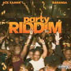

Presented by — Campaign Engineer × Baranga Team · November 2026
The cycle — Badman (3 May 2025) → CHAPTERS I NEVER WROTE (8 May 2026)
The window — Week 1 launch · December 2026 · Kampala × Western Uganda
Official art — Badman · Party Riddim · CHAPTERS I NEVER WROTE · @_baranga
BARANGA — 12-Week CampaignKampala01 / 18
Open high energy: “This is Baranga — a Munyoro artist from western Uganda who wrote his debut in high school, broke out with Badman in May 2025, and lands CHAPTERS I NEVER WROTE on 8 May 2026. This deck is the next 12 weeks of his life: how we take him from streaming proof to a permanent fixture on the East African sound.” Official covers throughout; numbers are Spotify/YouTube public figures as of November 2026.
Agenda
Where we’re going today
01
Who is BARANGAOrigin story, name meaning, where he is right now
02
Campaign objectivesSMART targets across awareness, streams, community
03
AudienceUgandan & East African Gen Z, 16–25
04
Brand archetypesOutlaw × Everyman × Jester — the Badman mix
05
CompetitionThe lane BARANGA owns — and how he wins it
06
Positioning & strategyThe one-liner, the six pillars, the hashtags
07
Visual identityDark, neon, unmistakably East African
Metrics & launchKPIs, tracking, and the Week 1 runway
BARANGA — AgendaKampala02 / 18
40-second roadmap. Point at slides 11–15 and say: “This is the machine — everything else is why it matters.” Official artwork throughout: no moodboards here, this is the real record.
Who is BARANGA · 1 of 2
From western Uganda to every feed
Baranga Ferdinand — professionally BARANGA. Ugandan Afro-pop & rap / hip-hop trap artist, signed to 5844655 Records DK.
Career began 2023. Debut single “SALO” (24 Aug 2024) — written and released while he was still in high school.
SALO is his first song built on a true personal story — the affair it chronicles is the foundation of his “real chapters” identity.
From western Uganda; Munyoro heritage — “Motorola by tribe”: tough, loud, proud.
The name “Baranga” fuses his hometown with “spreading the good news” — spreading good music.
Inspired by his uncle, already working in the industry — music was family business long before streaming.
Munyoro prideHigh-school origin storyWestern Uganda → Kampala“Spreading the good news”
Official Badman artwork 5844655 Records DK · 3 May 2025
BARANGA — Who is the ArtistKampala03 / 18
Tell the SALO story slowly. A teenager writes a song about a real affair, self-releases it, and it breaks. That’s why positioning leans on authenticity over polish. Repeat the name’s dual meaning out loud. Warm, brief on the uncle: “Music was in his family long before it was on streaming.”
Who is BARANGA · 2 of 2
The catalogue & momentum
Badman · 3 May 2025CHAPTERS I NEVER WROTE · teaserCHAPTERS I NEVER WROTE · album

Party Riddim · Ace Kaawa × BARANGA
~4,042Spotify monthly listeners
311K+“Badman” streams
~68KYouTube · Badman visualizer
Key releases
Release
Year
Notes
SALO
2024
Debut · 24 Aug 2024 · written in high school
Badman (feat. STANDO & Andrinah)
2025
The hit · 3 May 2025 · 5844655 Records DK
Party Riddim (Ace Kaawa & BARANGA)
2025
Dance record · Aug 2025
Do you? · Confirm (feat. Smokie Cee)
2025
The trap/Afro-pop singles run
CHAPTERS I NEVER WROTE
2026
7-track album · 8 May 2026
CHAPTERS — tracklist
01 PARADISE · TUNGI02 WAGWUAN · MR FALLBACK & MELLAN KUNTA03 KAMPALA · DEEJAY KLVN04 LOST CAUSE · KRAVYNZ & KING AVO05 BREATHE · MR FALLBACK06 JAGERMEISTER · KING AVO07 FREAKY
Figures: Spotify · YouTube · Shazam, November 2026. Island Kiss (Smokie Cee, feat. BARANGA, Aug 2026) extends the feature run.
BARANGA — The CatalogueKampala04 / 18
Three beats: Badman (the hit that proved demand), the album (seven chapters of content runway), velocity (~4K listeners = headroom, not saturation). If challenged on the numbers: “Public counters move; order-of-magnitude is what matters, and Week 0 re-baselines everything.”
Campaign Objectives
From spark to system
One goal: sustainable momentum for BARANGA as the authentic Gen Z “Badman” voice — every target numbered, dated and owned.
01 · Awareness
2–3× reachMonthly listeners & video views double-to-triple by Week 12; Badman plus one album deep cut trending on UG short-form.
02 · Streams
+50–100%Spotify streams and saves up 50–100%+ over the window; album tracks compounding week-over-week.
03 · Audience
+10–15K fansCombined IG / TikTok / YouTube growth, plus 5,000 in the WhatsApp community — an audience he owns.
04 · UGC Engine
500+ fan videos#BarangaBadman across TikTok/Reels; three recurring challenge formats; 20+ creator duets and stitches.
05 · Industry
3 playlists · 2 interviews · 1 show≥3 playlist adds (incl. one UG editorial), ≥2 radio/interview slots, ≥1 live showcase booked in Kampala or western Uganda.
06 · Long game
A system, not a spikeRepeatable content engine + 2027 release calendar + label-ready campaign report.
BARANGA — ObjectivesKampala05 / 18
Each number has a source of truth and a Week 12 deadline. Sequencing: awareness → streams → follows → UGC → industry leverage. The line to land: “We are not buying fame; we are compounding a fanbase that already exists.” 05 and 06 are the management-relevant wins.
Audience Profile
Gen Z, Kampala-first, East Africa ready
✓ What they want
Authentic voices — not industry robots
Party records for 2AM in Kabalagala
Luganda/Runyoro inflections, Kampala slang, local flavor
Origin stories they can quote and share
A sound they can claim as ours before the world catches on
✕ What’s missing
Label-polished acts disconnected from the street
Generic Afrobeats clones with no Ugandan fingerprint
No recurring challenge culture or fan ritual
Few emerging acts with both streams and a story
East-African faces rare on global trap/Afro-pop playlists
⇄ BARANGA fills it
High-school-to-Badman origin — instantly quotable
True-story songwriting builds parasocial trust
Badman energy + melodic hooks = TikTok-ready
Munyoro roots + Kampala hustle: two audiences, one artist
A meme-able identity — “You know it’s Baranga”
16–25 primaryUrban Kampala + western UG spilloverTikTok · Reels · ShortsSpotify + AudiomackAlso traveling: 25–34 Afro-pop listeners
BARANGA — AudienceKampala06 / 18
Pause on the middle column — that gap is why this campaign exists. Widen the frame if challenged on “just TikTok kids”: the SALO angle travels to 25–34 too. The studio still is the audience’s POV: leaning in, phones up, watching BARANGA cook.
Brand Archetypes
Outlaw × Everyman × Jester
Primary · Outlaw / Rebel
THE BADMAN
Rules are suggestions. The walk, the snarl, the hook — “Ayagala badman, Ayagala intensive care.” Swagger without apology: smoke, neon, leather, red/blue. The archetype is the record.
ConfidenceDefianceIndependence
The Badman code Click on the cover. Stay for the story.
Secondary · Everyman
The high-school kid who made it
Family in the industry, breakout written in class — fans grew up with him. Trust before fame; the relatable root system under the flex.
Tertiary · Jester / Lover
The party frequency
Party Riddim, melodic hooks, romance records — humor and pull that keep the catalogue re-listenable long after the snarl fades.
BARANGA — ArchetypesKampala07 / 18
Center is the pivot: “Outlaw gets the click, Everyman gets the save, Jester gets the replay.” Kill the one-note ‘angry badman’ read — the mix is what carries 12 weeks without fatigue. Ask the room: which archetype leads the next single?
Authenticity over polish — the story is the marketing
Speed — weekly shipping cadence vs. quarterly cycles
Origin story — nobody else owns the classroom-to-Badman arc
Collabs as distribution — every feature is a cross-post channel
Feature credits: official Apple Music / Deezer release data, Nov 2026. Stream figures are public approximations.
BARANGA — CompetitionKampala08 / 18
Don’t flinch on weaknesses — it buys credibility. The pivot line: “We can’t out-budget the majors; we out-authenticity them.” If pressed on whether features are ‘competition’: partners first, rivals second — collabs are distribution in this market.
Positioning & Strategy
Own the “Badman” lane
Positioning statement
For Ugandan & East African Gen Z (16–25) who want music that feels raw, local and theirs, BARANGA is the emerging Afro-pop / rap artist who turns true-story, high-school-rooted songwriting into party-ready trap anthems — written in the classroom, not a boardroom. You know it’s Baranga.
Read the statement out loud, verbatim. Six pillars left to right; the operating rule: content engine is non-negotiable, paid only amplifies what organic proves. Every post in weeks 1–12 carries at least one hashtag. WhatsApp over email for this demographic — it’s where the audience lives.
Visual Identity
Dark. Neon.East African.
Core palette — pulled from the records
Void Black#07070F · base
Deep Navy#171733 · panels
Electric Blue#2FD6FF · energy
Keffiyeh Gold#F5C542 · premium
UG Yellow#FCD116 · flag
UG Red#D90000 · flag
Badman Ash#2B2B33 · mono art
Bone White#F4F4FB · type
Typography
ARCHIVO BLACK · MONTSERRAT
Display: heavy uppercase, tight leading. Body: Montserrat 400/600. Kickers: letterspaced all-caps. No serif, no thin weights on dark.
Image language
Studio-raw, unposedKeffiyeh / mono texturesTorn-paper CHAPTERS motifKampala nightsHigh contrast, low-keyAlbum art as backdrop
Do
Raw studio BTS & rehearsal frames
Luganda / Runyoro caption flavor
UGC-first formats; fan reposts over polish
Album art + wordmark on every asset
One neon accent per frame
Don’t
Corporate-stock polish
Generic “African” tropes / safari cliché
Three messages in one frame
Unverified stream claims in creative
“baranga” in lowercase — the wordmark is BARANGA
BARANGA — Visual IdentityKampala10 / 18
This page is the design spec. Non-negotiables: void-black base, one accent per frame, Archivo Black under three words. Emerging artists lose identity through inconsistency, not bad taste — the do/don’t split is the whole game. The teaser art bottom-right is the brand at its purest: mono photo, torn paper, hand-set type.
12-Week Timeline · Overview
Three phases, one arc
WEEKS 1–4
Foundation & Awareness
Launch the Badman challenge, tell the origin story, seed the UGC flywheel. Lock identity; get into every Gen Z feed daily.
W1 — Launch: challenge film, dance tutorial, album trailer
W2 — Origin series: SALO, the name, Munyoro pride
W3 — UGC seed: duets, stitches, first boost on the winner
W4 — Deep-cut teasers: KAMPALA, PARADISE; community poll
Be everywhere, fast
WEEKS 5–8
Engagement & Growth
Turn viewers into fans: duets, lives, BTS, breakdowns, collab shoutouts — and the first paid support on proven creatives.
Scale what worked, ask for the save / follow / stream, stack social proof — and leave a system behind, not a spike.
W9 — Scale winners · streaming CTAs · radio lives
W10 — Collab push · fan campaigns · media features
W11 — Social-proof recaps · community milestone push
W12 — Recap film · finale challenge · 2027 roadmap
Make it stick
BARANGA — TimelineKampala11 / 18
Draw the arc: attention → affection → action. Paid enters only in phase two, only on creatives already winning organically. Taglines map to phases: “You know it’s Baranga” → “Baranga is for us” → “You knew it.”
12-Week Content Calendar · Overview
The weekly rhythm
Standing cadence — launch window, December 2026
Slot
Frequency
Owner
Short-form (TikTok / Reels / Shorts)
4–7× / week
Content lead + artist
Stories — BTS, polls, reposts
3–5× / day
Artist + community
Long-form — YouTube / Live / interview
1–2× / week
Video lead
Playlist pitch + blog/radio outreach
Fridays
Promo lead
“BARANGA answers” — community replies
Sundays
Community manager
Metrics review + calendar tuning
Bi-weekly · Friday
Full team · 30 min
Daily stand-up: 15 minutes, morning — “what ships today?” Evening: community sweep. Friday: numbers, not feelings.
Duets, BTS, breakdowns · peak challenge · collab shoutouts · paid on winners · “fills the gap” testimonials. Theme: “Baranga is for us.”
Weeks 9–12 · Amplify
Scale winners · save/follow CTAs · lives & radio · fan campaigns · social proof · finale + 2027 roadmap. Theme: “You knew it.”
■ Video■ Story■ Live■ Paid■ Editorial
BARANGA — Content CalendarKampala12 / 18
Hand this out as a one-pager. Cadence first, then the three themes. Rhythms, not commandments: a flat format is cut by week 3. The three taglines map to phases one-to-one.
Pitch — Playlist re-pitch with new streaming proof
Playlist note — Winner of the poll becomes the serviced single
“KAMPALA is the chapter nobody saw coming.”
BARANGA — Weeks 1–4Kampala13 / 18
Week 1 is shipping discipline — slip here and nothing else matters. Week 2 is the heart; no competitor can copy it. Week 3: quality over quantity. Week 4 poll = data disguised as engagement. Budget: one boost per week, always the winner.
Detailed Calendar · Weeks 5–8
Engagement & growth
WEEK 5 · FANS FIRSTCloseness
Recap — Fan duet/stitch roundup #2, fan-credited
Live — IG/TikTok Q&A, 45–60 min, promo’d 3 days ahead
BTS — Studio session: tracking the Badman vocals
Breakdowns — One verse a day: KAMPALA & Badman bars
Community — “Fans only” voice note from BARANGA
“Ask me anything — no PR filter, no manager on the line.”
Radio — NRG Radio UG interview airs; podcast bookings
Geo — Kampala · Mbarara · Fort Portal · London · Toronto
“The whole city can hear it from here. Kampala → the world.”
WEEK 8 · PROOF & PIVOTMid-review
Fans — “What Badman means to me” — 3–4 testimonial films
Doc — “BARANGA fills the gap” — 90-second editorial
Report — Mid-campaign: streams, listeners, followers, UGC vs. targets
Optimize — Kill flat formats; double the winners; re-cut captions
Review — Weeks 9–12 plan locked to what the numbers say
“Two months ago nobody knew the name. Today the blogs are learning it.”
BARANGA — Weeks 5–8Kampala14 / 18
Vanity → community. The live is the highest-trust hour of the campaign — no scripts. Paid pours fuel on organic fire only. Week 8 is the honesty checkpoint: reset targets here if needed, never in week 11.
Fan push — #YouKnowItsBaranga — best fan story featured officially
Media — 1 long-form interview + 2 blog features
Community — “Badman army” broadcast; listening sessions coordinated
“This is what happens when Kampala raps together.”
WEEK 11 · SOCIAL PROOFConvert
Recap — “X fans, Y videos, Z streams — you did this”
CTAs — Pre-save the next single; follow @_baranga
Milestone — Drive WhatsApp community to 5,000
Shows — Booking outreach with the metrics pack (mgmt / venues)
Review — Final-stretch metrics lock: three Fridays of data
“Numbers don’t lie. Check the streams — then join the army.”
WEEK 12 · FINALELand it
Recap film — 12 weeks in 90 seconds, with the receipts
Thanks — Thank-you post + finale challenge; one last #BarangaBadman wave
Roadmap — 2027 sustain reveal: next single, show hint
Report — Campaign report teaser for management & labels
Debrief — Evergreen content bank handed to the team
“You knew it. Now 2027 begins. — You know it’s Baranga.”
EVERY WEEK — morning batch · evening community sweep · Friday analytics · weekly playlist pitch · Sunday replies
Tracking columns: Day · Type · Platform · Hook · Asset · CTA · Owner
BARANGA — Weeks 9–12Kampala15 / 18
Week 9 is the ask — eight weeks of giving earns the explicit ask. Week 10: every partner post is a mini-launch. Week 11: the 5K community milestone outlives the algorithm. Week 12: gratitude, not noise — the recap film is the label/venue case study.
Success Metrics & Tracking
If it isn’t measured, it didn’t happen
KPI board — baseline → Week 12
Metric
Baseline
Target · W12
Source
Spotify monthly listeners
~4,042
8–12K · 2–3×
Spotify for Artists
Badman + album streams / 28d
311K+ cumulative
+50–100% WoW
Spotify for Artists
Followers added (IG / TikTok / YT)
—
+10–15K
Native analytics
#BarangaBadman UGC videos
0
≥ 500
TikTok / IG tags
Playlist adds (incl. 1 UG editorial)
—
≥ 3
SubmitHub · direct
Radio / interview slots
—
≥ 2 · NRG Radio UG
Booking log
Live show / showcase
—
≥ 1 · Kampala or western UG
Venue LOI
WhatsApp / Discord community
0
≥ 5,000 members
Channel analytics
Public figures as of Nov 2026. Baselines re-cut in Week 0; targets hold regardless.
The expected curve
Toolstack
Spotify for ArtistsYouTube StudioIG / TikTok InsightsMetricoolSubmitHubWhatsApp Channel statsNotion content DB
One dashboard. Reviewed Fridays. UTM’d links on everything paid.
Red lines
Never boost a flat creative
Saves & streams over vanity follows
Never skip a Friday review in weeks 5–11
BARANGA — MetricsKampala16 / 18
Metrics are reviewed Friday, decisions made Friday — never on mid-week emotion. The curve: flat W1–2 (seeding), inflection W3–4 (UGC), compounding from W6. Miss targets? Diagnose in order: hook → cadence → CTA → paid efficiency. Red lines are behaviors, not KPIs.
Next Steps
The runway to Week 1
✓Budget, channels & asset list locked — sign-off this week
✓Calendar built in Notion / Google Sheets — owners assigned
✓Tracking live: Spotify for Artists, dashboards, UTM links
✓Artist alignment: availability, approvals, fit checks with management
✓Week 1 · first full week of December 2026 — the Badman challenge drops
Launch window
DECEMBER 2026
Week 0 starts Monday after sign-off
@_baranga — search “Baranga” on Spotify · Apple Music · YouTube · Audiomack
BARANGA — Next StepsKampala17 / 18
The ask in the room: budget + launch date sign-off, and artist commitment to the cadence — without the artist posting, none of this runs. Owners get assigned before people leave. Final line: “Week 1 is either a launch or a missed window. We’re doing launch.”
THANK YOU
YOU KNOW IT’S BARANGA.
12 weeks. Three phases. One fanbase. From high-school notebook to the whole timeline.
Sources — Spotify · Apple Music · Shazam · YouTube · Audiomack · Deezer · NRG Radio UG · official releases (SALO · Badman · Party Riddim · CHAPTERS I NEVER WROTE). Artwork shown is official release artwork of the respective rights holders.
BARANGA — Thank YouKampala18 / 18
Let it land in silence. The one thing to remember: “Protect the Friday metrics review and the Sunday reply session — everything else is execution.” Next steps beyond week 12: 2027 single cycle, Kampala + western Uganda showcase, label/distribution conversation backed by this report. Thank the artist and management by name.